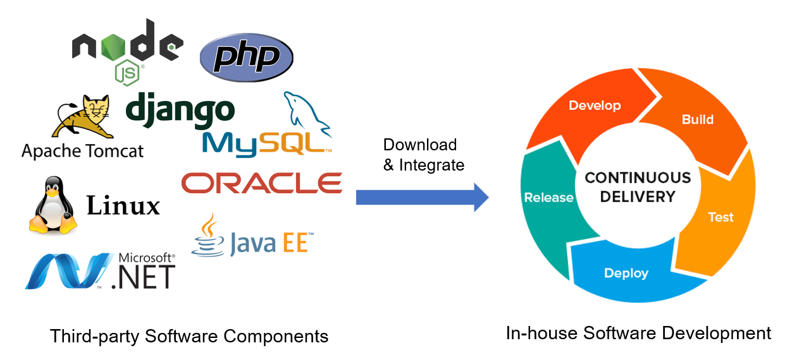

What is Software Supply Chain?
Software has become an integral part of crucial infrastructures throughout the United States. Underlying modern software systems is the supply chain of open-source software components, such as Apache Spark, whose functionalities are reused and integrated into various systems underpinning modern society.
Our solution
In this project, our team aim to develop a unified knowledge graph that captures rich, upto date information about software components in heterogenous software ecosystems. Building
upon our prior work on noise-robust open knowledge extraction, we will develop a new neural
knowledge acquisition pipeline that (1) extracts software information from various information
sources, including but not limited to official documentation, software release notes, bug reports,
CVEs, and online discussions, (2) consolidates the extracted information via an array of quality
control and fact-checking mechanisms, and (3) constantly updates the knowledge graph by tracking
new information from various sources. The resulting knowledge graph will empower us to
further develop a novel multi-modal query interface for knowledge dissemination, as well as new
risk mitigation approaches that perform deep scans on software systems, detect potential risks,
and automatically repair them. Finally, we will collaborate closely with our industrial partners to
deploy the resulting knowledge graph and knowledge-based techniques and evaluate their usefulness
in real-world software systems.
The figure below demonstrates an example knowledge graph for software supply chain security, where each entity—such as a software library or a vulnerability—is represented as a node, and the relations between them are depicted as edges. For instance, the entity "Apache Log4j," a widely-used logging library, is shown as a node connected to its different versions, such as v2.16.0. These versions are further linked to other entities, indicating dependencies on different applications (e.g., Cisco CX Cloud) or vulnerabilities associated with them (e.g., "Denial of Service").
- STEPS: An interactive text-to-SQL generation tool based on editable step-by-step explanations [GitHub] [Huggingface]
-
MIWA: A chrome extension tool for web automation [GitHub]
- SoftNER: A model specialized for software entity recognition in free-form text? [GitHub] [Huggingface]
- Decide: A pre-trained Question-Answering model to extract version compatibility knowledge from SO posts [GitHub]
-
ASSORT: A chrome extension tool for automated summarization of Stack Overflow posts [GitHub]
Contact information
Tianyi Zhang
Assistant Professor, Department of Computer Science, Purdue University
Lawson 3154H, Purdue University